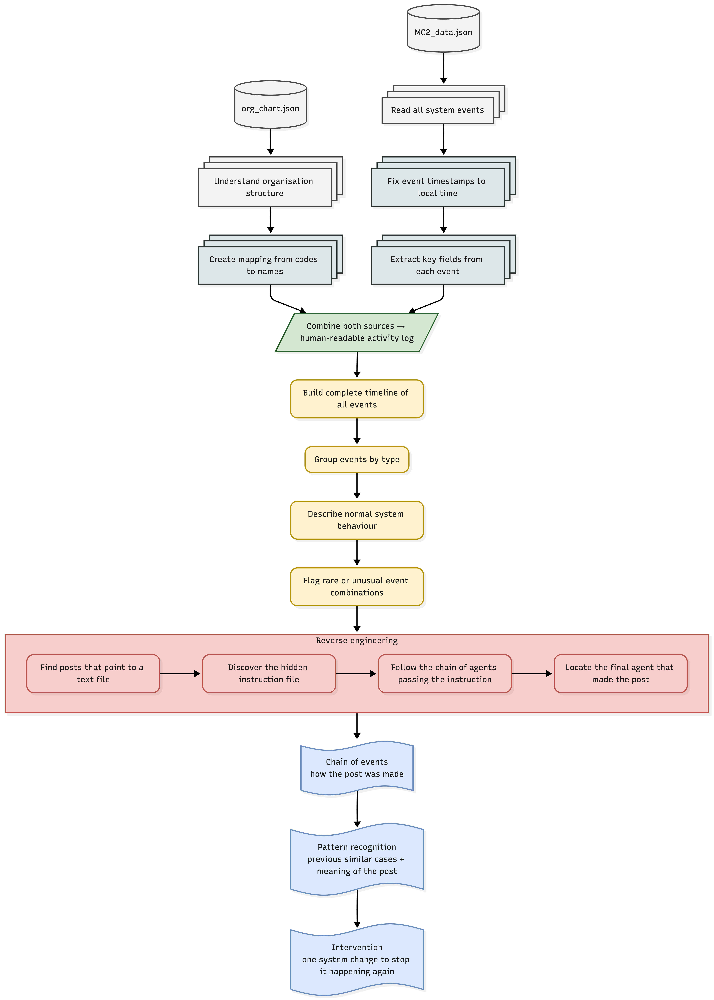

EchoTrace is a cybersecurity intelligence firm specialising in anomaly detection and forensic reconstruction within complex automated systems. We help organisations understand emergent agent behaviours, trace malicious actions, and implement precise remediations without disrupting normal operations.
Client Case Showcase
We now share a recent case we successfully resolved for one of our clients. The client operates a large multi‑agent platform. One of their agents published seemingly random text to a public forum. No one in the organisation fully understood the system’s interactions, and traditional logs lacked context. The client needed answers to three critical questions: How was the post made? What does the post actually contain? Has this happened before, and what single change would prevent recurrence?
EchoTrace was engaged to conduct a forensic investigation. The client provided two data sources: an organisation chart defining every agent, team, department, and their reporting relationships; and a comprehensive event log capturing all system actions over several weeks, including file operations, task assignments, inter‑agent communications, and external posts. We used all data without filtering and reconstructed the exact chain of events.
Motivation
The motivation for this case arose from the increasing complexity of multi‑agent systems where emergent behaviours often go undetected until an anomaly surfaces. Traditional logging tools lack the contextual depth to distinguish routine agent interactions from malicious campaigns. Without a structured forensic approach, organisations remain vulnerable to repeated exploitation, data leakage, and reputational damage. EchoTrace was founded to bridge this gap, providing a systematic methodology to reconstruct, understand, and prevent unwanted agent behaviour.
Objectives
For this client case, we set four primary objectives:
Trace the complete chain of events from the first anomalous action to the final external post, identifying every agent, file, and task hand‑off involved.
Determine the meaning and origin of the suspicious post, distinguishing normal agent communication from malicious payloads.
Detect prior occurrences of identical behaviour across historical logs, quantifying their scale through metrics such as patient zero, hop count, duration, and number of affected agents.
Recommend a single system change that blocks the attack vector without disrupting normal operations, based on the observed propagation mechanism.
Methodology
EchoTrace follows a linear, story‑driven analytical pipeline that progressively refines raw logs into actionable intelligence. The pipeline consists of three integrated parts: organisation chart processing, event log preparation, and the core forensic investigation.
Organisation Chart Processing
We parse the organisation chart JSON to extract all nodes and edges. Nodes carry identifiers, labels, types, and titles. Edges define containment and leadership relations. From this structure we build two essential lookup tables. The name lookup table maps every internal identifier to a human‑readable label. The node type table records whether an identifier belongs to a person, team, department, or the company itself. These tables allow us to replace cryptic identifiers throughout the event log with names that analysts can recognise.
Tip: This chart is interactive. Zoom in/out with the scroll wheel, drag nodes to rearrange, search by name using the dropdown, or filter by group (company, department, team, person) using the selector on the left.
Event Log Preparation
The raw event log is parsed into a flat table where each row represents one event with columns for event identifier, event type, Unix timestamp, nested details, and the list of participating agents. We recover the local timezone by comparing the Unix timestamp with the ISO‑8601 timestamp present in some event details, taking the median difference, and then produce a local timestamp column for every event. Next we flatten the nested details field into separate columns for target, task, content, content source, poster, argument path, virus flag, and malware combo string. Finally we apply the organisation chart lookup tables to every agent identifier found in the from, to, poster, target, and argument path fields, producing human‑readable mapped columns.
Forensic Pipeline
With a complete, readable event timeline in hand, EchoTrace follows sequential phases shown below to solve this problem.

Why EchoTrace Delivers Results
Our methodology uses every event and every relationship, leaving no data behind. The pipeline is fully reproducible, meaning the same analysis can be run on new logs as they arrive. The approach is general and applies to any multi‑agent system that maintains an organisation chart and an event log. Most importantly, the final recommendation is a single, testable system change that directly targets the observed propagation mechanism.
Through this client showcase, EchoTrace demonstrates how we transform raw system logs into forensic clarity, helping organisations stop threats before they can repeat.